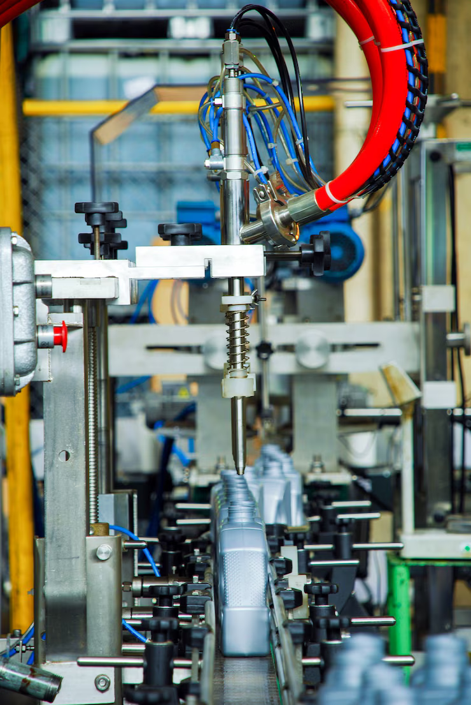
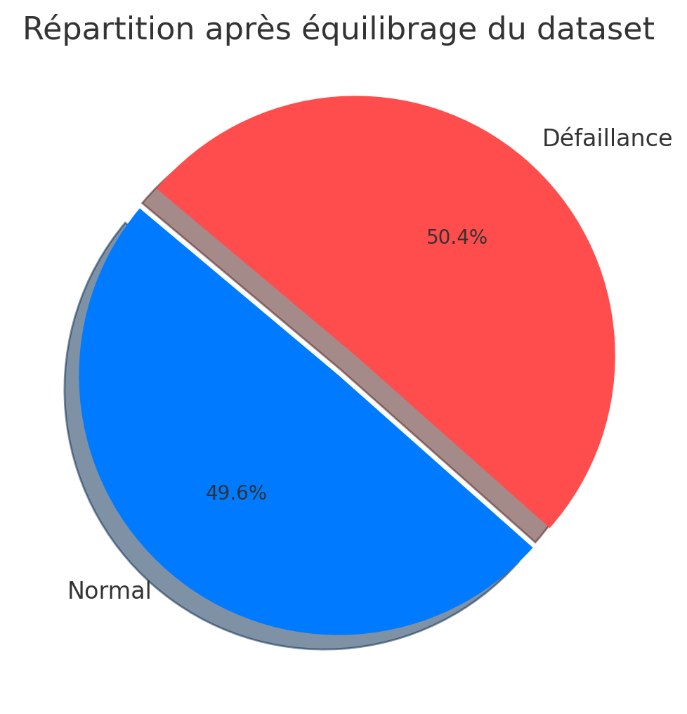
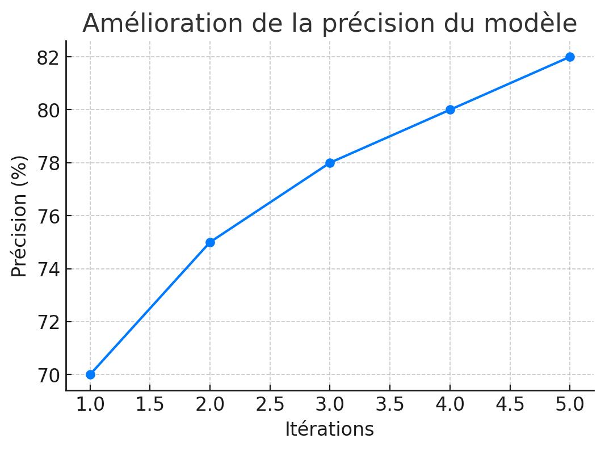

Machine industrielle surveillée par des capteurs IoT pour la maintenance prédictive.
📌 Problématique du Projet
Les arrêts imprévus des équipements industriels peuvent coûter des millions d'euros par an.
Notre objectif est d’anticiper les défaillances grâce à l'analyse des données collectées en temps réel sur la machine :
- 🌡️ Température de l'air ambiant
- 🔥 Température du processus
- 🔄 Vitesse de rotation de l'équipement
- ⚙️ Couple appliqué
- ⏳ Usure de l'outil
- 🏷️ Type de produit fabriqué
📊 Visualisations

Répartition des défauts

Progression de la précision
🛠️ Étapes du Projet
- Analyse initiale et détection d'un déséquilibre dans les classes
- Prétraitement des données & équilibrage
- Entraînement d'un modèle de régression logistique
- Création d'une API avec Spring Boot pour la prédiction
- Intégration d'une interface utilisateur conviviale
Statut actuel : Précision du modèle à ~82% ✅